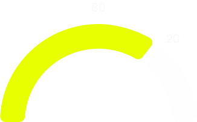
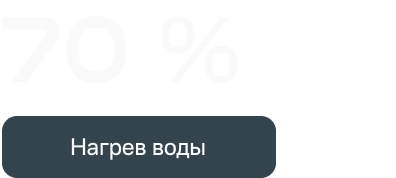
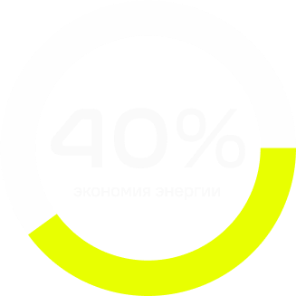

Почему 30° —
твой шанс на успех?
Виктория Николаева
Время чтения: 3 мин
Коротко
Стирка — регулярная бытовая привычка. Мы редко задумываемся, сколько энергии, воды и ресурсов тратим. При этом изменение всего одной настройки даёт заметный эффект без усилий и трат
Стирка при 30° экономит электричество, продлевает жизнь одежде и снижает вред для окружающей среды. При этом качество стирки остаётся высоким для большинства повседневных вещей
Факты
Высокая температура, если...
Высокие температуры оправданы, когда приоритет — гигиена и безопасность. Например, нужно стирать белье после болезни, одежду младенцев, сильно загрязненные вещи, кухонные полотенца, хлопковый текстиль, а также при кожных заболеваниях и аллергиях
Может в тг?
В Telegram-канале пишем экологично,
без лишнего информационного мусора
Цифры

80% стирки при 30°, 20% в особых случаях. См выше

Около 70% электроэнергии уходит на нагрев воды

При бережной стике вещи живут 20–40% дольше
